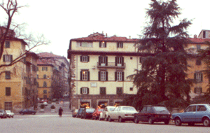
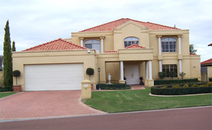

| |

 
Attività 1 Il mio appartamento
Maurizio abita in Italia. Let’s look at what he says about where he lives.

|
Abito a Lucca in centro in un appartamento.
L’appartamento è in un palazzo antico. In Italia i palazzi in centro, di solito sono molto vecchi. È al quarto piano. È un appartamento abbastanza piccolo ma è molto comodo abitare nel centro storico.
Ci sono due camere da letto. Quella dei miei genitori e la mia. Nella mia camera c’è il computer, così è anche il mio studio.
Abbiamo un soggiorno spazioso dove guardiamo la televisione insieme.
La cucina è in stile antico. Mangiamo in cucina perché non abbiamo una sala da pranzo.
C’è un bagno. Non c’è un garage. Papà lascia la macchina in una strada vicino all’appartamento.
Nel palazzo non c’è un giardino ma abbiamo un balcone.
|
 |
Housing situations in Italy are very different from those in Australia. Italians live predominantly in apartments and most houses in Italy have more than
one storey.
Living space is limited especially in città. Consequently, Italians tend to spend
a lot of time out of the ‘home’ environment. Typical aspects of teenage life
are fare una passeggiata in centro, guardare le vetrine, meeting friends in the
piazza, al bar, in pizzeria. |
According to Maurizio’s description of where he lives, which of the following floor plans gives
an accurate description of his house? Click on the correct floor plan.
Maurizio said:
un appartamento
un bagno
una sala da pranzo
Un and una mean ‘a’ or ‘an’ and are forms of l’articolo indeterminativo.
Refer to L’articolo indeteminativo to find out how the indefinite article works. |
 |
Look at the different types of abitazioni in Italia in the picture gallery.
What are the rooms of the house in italiano? Match the words to the floor plan.
 |
Refer to Com’è la tua casa? if you need assistance with the vocabulary. |
Erica abita in un sobborgo vicino a Perth, Western Australia. Let’s look at what she says about where she lives.

|
La mia casa è in un sobborgo vicino al mare. È anche molto vicino alla città di Perth.
Abito in una casa a due piani. La mia casa è moderna e spaziosa.
Nella mia casa ci sono cinque camere da letto.
C’è lo studio di papà. È molto elegante.
La cucina è enorme. Mia madre si diverte molto in cucina.
Il soggiorno ha una vista del mare. Qui io e la mia famiglia ci rilassiamo.
Ci sono due bagni. Un bagno è per i miei genitori e l’altro è per noi ragazzi. Questo è molto comodo.
Il garage è grande. C’è spazio per due macchine e le biciclette.
Abbiamo un giardino bello. Ci sono tanti alberi e piante. Il mio cane si diverte da morire quando è nel giardino.
|
Osservazioni
Record your observation in this worksheet_B1.1.
|
Maurizio lives in un appartamento and Erica lives in una casa.
Dove abiti? shows you how to talk about the different types of housing. |
|
|